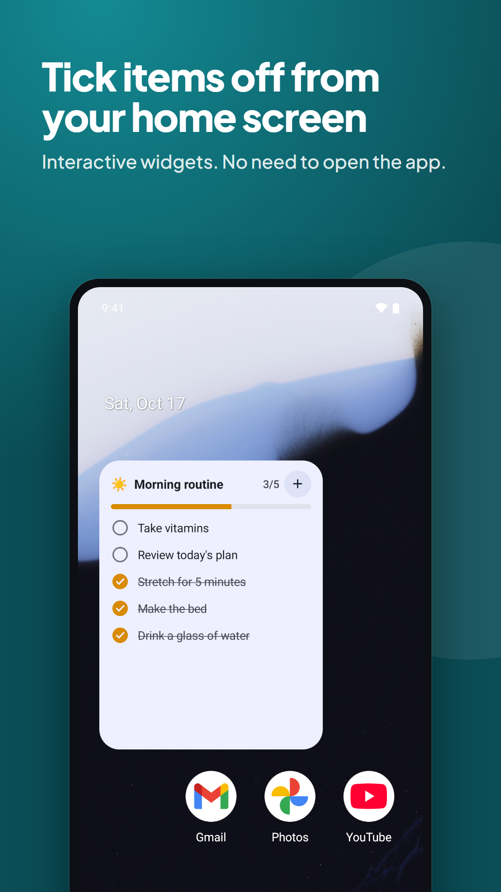
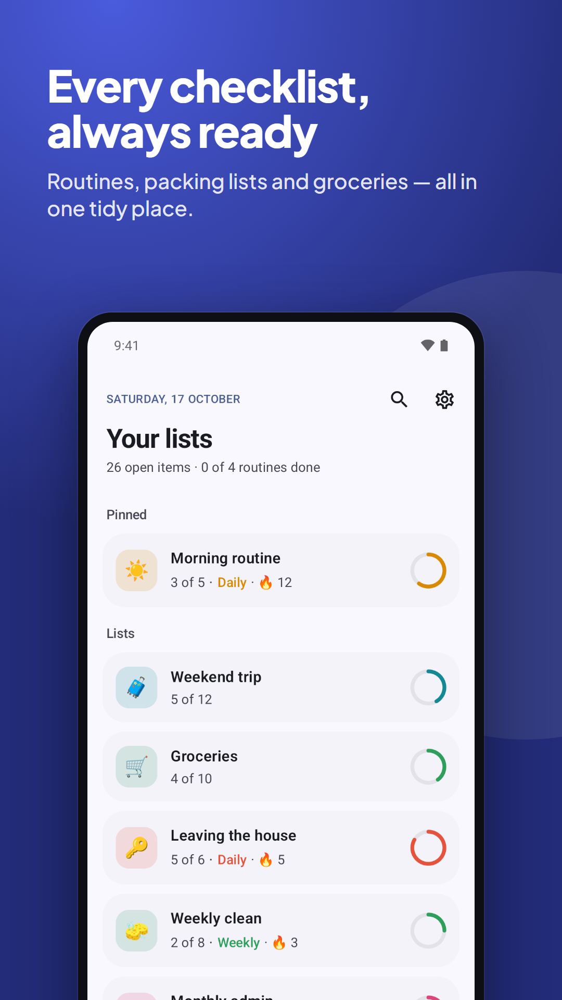
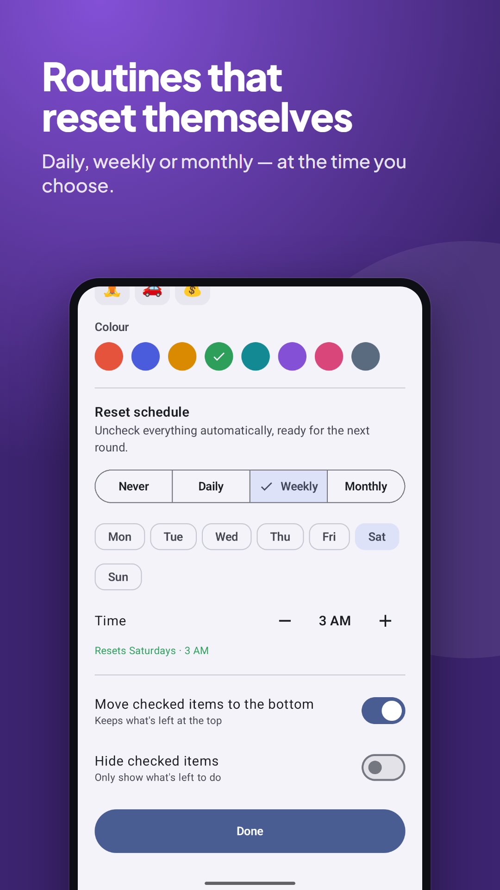
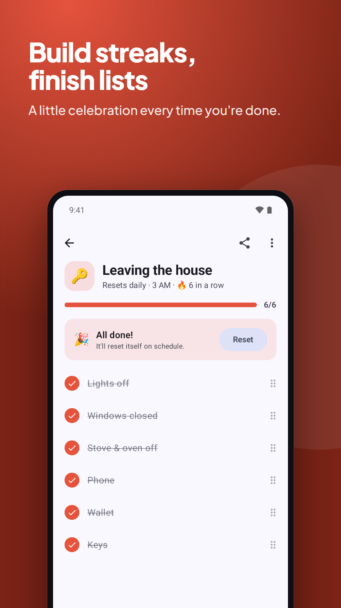

Make a list once, use it forever. Morning routines that clear every day, packing lists for every trip — and a widget that lets you tick things off right from your home screen.
Get it on Google PlayFree · No account · No ads · Your lists stay on your phone

Daily, weekly or monthly at the time you choose, with streaks for every routine you keep.
Tick items off, add new ones and see progress without opening the app.
Enter keeps the keyboard up, and pasting a list adds every line. Share any text to make a checklist.
Organise packing lists by section, or start from ten ready-made templates.
No sign-up and no tracking. The Android app doesn't even ask for internet access.
Looks at home on your phone, and celebrates when you finish a list. 🎉


